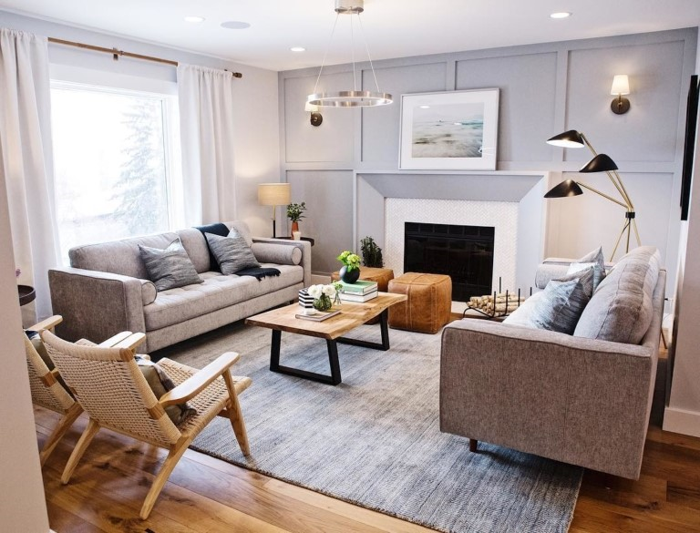
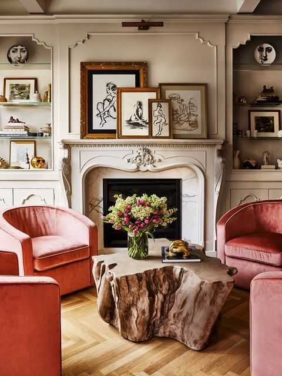
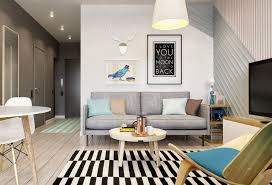
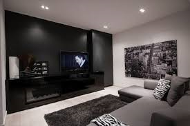
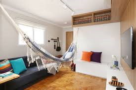
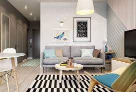
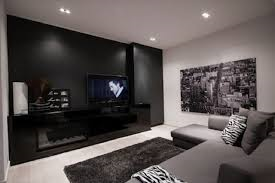
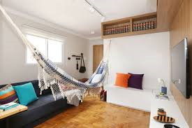

A figura 1 trata-se um designe rústico elaborado pela Joanna Gaines, já na imagem 2 a disegner Leanne Ford trabalhou com um conceito mais minimalista, exelente para quem gosto de algo mais simplificado. 
O projeto de sala moderna, com uma ótima iluminação, foi pensada pelo Jonatthan Scott, e por último vemos um cômodo com uma pegada mais clássica ou vintage.
Sugestões extras
 




